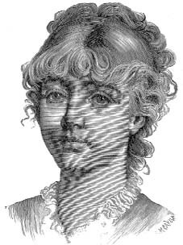

18 ve 19 Nisan 1897 güncelerinden
Bu noktada, Simonini'nin omuzları üzerinden Dalla Piccola'nın yazısını okuyan, kalemi tutan elin takati kalmamışçasına metnin yarıda kesildiğini ve hatta uzun bir çizgiyle sonlandığını, yazan kişinin yere yuvarlandığını, anlamsız bir çizginin kâğıttan sonra yazı masasının derisini de lekelediğini fark edecektir. Sonra bir sonraki kâğıttan anlaşıldığına göre yazıyı Yüzbaşı Simonini sürdürmüştü.
Simonini o sabah rahip giysileriyle uyanmıştı, başında Dalla Piccola'nın peruğu vardı ama kuşkuya mahal vermeyecek kesinlikle Simonini olduğunu bilmekteydi. Masada duran, histerik ve giderek sarsılan bir kalemin yazdığı kâğıtları hemen görmüştü; sözde Dalla Piccola'nın yazdığı satırları okurken, terliyor, yüreği hızla çarpıyor, onunla hatırlıyordu; onun (rahip) ya da kendisinin (Simonini) yazdığı satırlara bakarken bayılmışlardı, hayır... o bayılmıştı.
Kendine geldiğinde zihni yavaş yavaş sislerden arındı ve her şey aydınlanmaya başladı. İyileşirken Dalla Piccola ile aynı kişi olduğunu anlıyordu; bir önceki akşam Dalla Piccola'nın hatırladığını şimdi o da hatırlıyordu; yani (o öldürdüğü dişlek olan değil, yıllar boyunca yeniden canlandırdığı ve yaşattığı) Rahip Dalla Piccola kisvesi içinde kara ayin dehşetini yaşamıştı.
Sonra ne olmuştu? Belki de boğuşma esnasında Diana onun peruğunu çıkarma fırsatı bulmuştu, belki zavallının cansız bedenini lağıma sürüklerken rahip cüppesinden sıyrılmak zorunda kalmış, sonra aklı başında olmayarak içgüdüsel bir şekilde Maître Albert Sokağı'ndaki kendi odasına girmiş, 22 Mart sabahı orada uyanmış, giysilerinin nerede olduğunu bilememişti.
Diana ile tensel temas, onun rezil kökeni, gerekli ve neredeyse ayinsel cinayet ona çok fazla gelmişti; gene o gece belleğini yitirmişti ya da Dalla Piccola ve Simonini birlikte belleklerini yitirmişlerdi ve her iki kişilik o ay boyunca birbirlerinin yerini almışlardı. Büyük olasılıkla, aynen Diana'ya olduğu gibi bir kriz, bir sara krizi, bir baygınlık ile bir halden ötekine geçiyorlardı; bunun farkına varmıyorlar ve her seferinde uyurken olduğu kişiden farklı kişi olarak uyanıyorlardı.
Doktor Froïde'un tedavisi işe yaramıştı (kendisi işe yaradığını hiçbir zaman öğrenememiş olsa bile). Arada sırada öteki kendine, zihninin derinliklerinde uyumuş olan anılarını anlatan Simonini en can alıcı noktaya varmış; onu amneziye sürükleyen ve ruhunda iki ayrı kişilik doğmasına neden olan travmatik olaya ulaşmıştı; kişiliklerin her biri geçmişinin bir kısmını hatırlıyordu ama o ya da öteki –aynı kişi olsa da– bu silişin korkunç, dile gelmez nedenini ötekinden saklamaya çalışmasına rağmen, farklı anlatıları birine bağlayamıyordu.
Hatırlarken, Simonini haklı olarak kendini bitkin hissediyordu; yeni bir hayata yeniden doğduğuna emin olmak için günceyi kapatmış ve artık kim olduğunun bilinciyle dışarı çıkmaya ve herhangi bir karşılaşmaya hazır olduğunu hissetmişti. Güzel bir yemek yemeye gereksinme duyuyordu ama o günlük bir oburluk yapmayacaktı, çünkü duyuları ciddi bir sınavdan henüz çıkmıştı. Bir Thebai keşişi gibi kefaret ödemeliydi. Flicoteaux'ya gitmiş ve on üç kuruşa mantıklı ama kötü yemekler yemeyi başarmıştı.
Eve döndüğünde oluşturmayı sonlandırdığı konuda birkaç ayrıntıyı daha not etti. Şimdi artık bildiği şeyi öğrenebilmek amacıyla tutmaya başladığı günceyi sürdürmesine gerek kalmamıştı ama yazmaya da alışmıştı. Kendisinden farklı bir Dalla Piccola'nın var olduğunu varsayarak bir ay kadar diyalog kurabileceği bir kişi olduğunu hayal etmişti ve bu diyaloğu kurdukça çocukluğundan beri ne kadar yalnız olduğunu fark etmişti. Belki de (Anlatıcı'nın düşüncesine göre) söyleşebileceği bir kişi bulabilmek için kişiliğini ikiye bölmüştü.
Artık Öteki'nin var olmadığını kabullenme zamanıydı ve günce bile bir yalnızlık işiydi. Ama bu teksesliliğe alışmıştı ve böyle sürdürmeye karar vermişti. Kendine bayıldığından değil, başkalarına karşı duyduğu huzursuzluk onu kendine bile katlanmaya zorunlu kılıyordu.
Lagrange ona Boullan ile ilgilenmesini söylediği zaman –gerçeğini öldürdükten sonra– sahneye Dalla Piccola'yı çıkartmıştı. Bir din adamının, pek çok konuda laik ve sivil giyimli birinden daha az kuşku uyandıracağını düşünmüştü. Ve ortadan kaldırdığı birini yeniden ortaya çıkartmak işine gelmişti.
Maubert Çıkmazı'ndaki evi ve dükkânı pek ucuza satın aldığında, Maître Albert Sokağı'na bakan odayı ve çıkışı hemen kullanıma sokmamıştı ve dükkânı da kullanabilmek için çıkmaz sokağa açılan kapıyı yeğlemişti. Dalla Piccola sahneye girince odayı üç kuruşluk mobilyalarla döşemiş ve hayalet rahibine hayalet bir ev yaratmıştı.
Satanist ve okült çevrelere burnunu sokmanın dışında Dalla Piccola bir işe daha yarıyordu: Son nefesini veren hastaların –sonradan Simonini'nin ona yazacağı vasiyetle– ölümden yararlanacak yakın ya da uzak akrabaları son dua için onu çağırıyorlardı; öyle ki birisi bu beklenmedik belgeden kuşkulansa bile bir kilise görevlisinin tanıklığı vardı; o vasiyetin hastanın son nefesinde fısıldadıklarıyla örtüştüğüne yemin edebilirdi. Taxil olayı yüzünden Dalla Piccola mutlaka gerekli olunca ve bütün o misyonu üstleninceye kadar on yıl süresince bu işi yapmıştı.
Simonini, Dalla Piccola kisvesiyle Peder Bergamaschi ve Hébuterne'e de yaklaşabilmişti, çünkü son derece inanılır biçimde kimlik değişimi yaşıyordu. Dalla Piccola sakalsızdı, sarışındı, gür kaşları vardı, bakışlarını saklayan mavi bir gözlük takardı. Bu da yetmezmiş gibi kendine farklı bir kaligrafi geliştirmişti; daha ufak ve daha kadınsı harflerle yazıyordu ve hatta sesini bile değiştiriyordu. Gerçekten de Dalla Piccola olduğunda, Simonini sadece farklı biçimde konuşup yazmakla kalmıyor, kesinlikle bambaşka bir kimliğe bürünüyordu.
Ne yazık ki Dalla Piccola artık ortada görünemeyecekti –bu adı taşıyan bütün rahiplerin kaderi buydu– ama Simonini'nin, onu travmaya sürükleyen o utanç verici olayı unutması, Paskalya pazartesisinde Taxil'in –vaadi üzerine– oyunlarını açıklayacak olması ve son olarak da ortadan kalkan Diana'ya ilişkin meraklı sorulara mahal verilmemesi için bütün bu komplonun izleri silinmeliydi.
Önünde sadece bu pazar ve ertesi günün sabahı vardı. Taxil ile buluşmak için Dalla Piccola'nın giysilerini bir kez giymişti; Taxil son bir ay boyunca her iki ya da üç günde bir Auteuil'e uğramış, ne Diana'yı ne onu bulabilmiş, hiçbir şey bilmediğini söyleyen yaşlı kadından başkasına ulaşamadığı için masonların onları kaçırdığına ihtimal vermeye başlamıştı. Ona Du Maurier'nin nihayet Diana'nın Charleston'da yaşayan gerçek ailesinin adresini verdiğini, Diana'yı Amerika'ya giden bir gemiye bindirdiğini söylemişti. Taxil sahtekârlığını açıklamadan önce, tam zamanında yapmıştı bunu. Ona vaat edilmiş yetmiş beş bin franktan beş bin frank avans vermiş ve ertesi günün öğleden sonrasında Coğrafya Derneği'nde buluşmak üzere sözleşmişlerdi.
Sonra gene Dalla Piccola kisvesiyle Auteuil'e gitmişti. Ne onu ne Diana'yı bir aydır görmeyen ve durmadan uğrayan Bay Taxil'e ne diyeceğini bilemeyen ihtiyar kadın pek sevinmişti. Ona da aynı hikâyeyi anlatmış, Diana'nın gerçek ailesini bularak Amerika'ya döndüğünü söylemişti. Cömert bir bahşişle susan kocakarı paçavralarını toplayıp öğleden sonra evi terk etmişti.
Akşam olunca, Simonini o yıllara ait ortaklığın bütün izlerini, bütün belgelerini yakmış ve gecenin ileri saatlerinde içine Diana'nın giysileri ve gereksiz süslerini doldurduğu bir sandığı armağan olarak Gaviali'ye götürmüştü. Eskici, eline düşen malın kaynağını asla soruşturmaz. Ertesi sabah ev sahibine gitmiş, beklenmedik bir biçimde, uzak topraklarda bir görev üstlendiğini uydurmuş, hiç tartışmadan altı aylık kirayı da ödemişti. Ev sahibi onunla eve gelip mobilyaların ve duvarların iyi durumda olup olmadığını kontrol etmiş, anahtarları geri almış ve kapıya çifte kilit vurmuştu.
Söz konusu olan Dalla Piccola'yı (ikinci kez) "öldürmek"ti. Pek fazla bir şey gerekmiyordu. Simonini rahip makyajını silmiş, cüppeyi yeniden koridora asmış ve Dalla Piccola yeryüzünden silinivermişti. Önlem olarak dinsel kitapları ve dua diz sehpasını daireden çıkarmış, beklenmedik meraklılara satmak için dükkâna indirmiş ve böylece bambaşka bir kişileştirme için kullanabileceği bir dairesi olmuştu.
Bütün o öyküden geriye kalan yalnızca Taxil ve Bataille'ın zihinlerinde kalanlardı. Ama Bataille ihanetinden sonra kesinlikle bir daha ortaya çıkamazdı ve Taxil olayı da o öğleden sonra kapanacaktı.
19 Nisan öğleden sonra, Simonini her zamanki giysileriyle Taxil'in sahneden çekilme gösterisini seyretmeye gitmişti. Taxil, Dalla Piccola'nın dışında bir de sakalsız, kumral, iki altın dişli sözde noter Fournier tiplemesiyle de tanışmıştı ve Simonini'yi bir kez sakallı görmüştü; Hugo ve Blanc'ın mektuplarının sahtelerini yazdırmak için gittiği o günün üzerinden on beş yıl geçmişti ve büyük olasılıkla o kalpazanın yüzünü unutmuştu. Simonini, her olasılığa karşı beyaz bir sakal ve yeşil gözlükler takmış ve dernek üyesi havasında yerine oturup gösterinin tadını çıkartmıştı.
Bu olay bütün gazetelere yansıdı. Salon meraklılar, Diana Vaughan müritleri, masonlar, gazeteciler hatta piskoposluk delegeleri ve papalık elçileriyle doluydu.
Taxil kendinden emin ve etkileyici bir tavırla konuştu. Diana'nın takdimini ve son on beş yılda yayımladığı her şeyi kabul etmesini bekleyen seyircisini şaşırtan Taxil Katolik gazetecilere çıkışarak, açıklamalarının çekirdeğini "Halk bilgeliği, ağlamaktansa gülmek evladır der" cümlesiyle ortaya koydu. Aldatmaktan duyduğu keyfe "Boşuna Marsilyalı değilim" diyerek değinmiş ve seyirciyi güldürmüştü. Seyirciyi hilekârlığı konusunda ikna etmek için zevkle Marsilya'daki köpekbalıklarını ve Leman Gölü'ndeki batık şehri anlatmıştı. Ama hiçbiri hayatının en büyük düzenbazlığıyla boy ölçüşemezdi. Açık açık ihtida edişini, onun pişmanlığının içtenliğinden emin olmak isteyen spiritüel idarecileri ve günah çıkaranları nasıl kandırdığını ballandıra ballandıra anlatmıştı.
Sadece bu başlangıç bile önce kahkahalarla sonra da giderek hayrete düşen rahiplerin şiddetli müdahaleleriyle kesildi. Kimisi kalkıp salondan çıkıyor, kimisi ona fırlatmak üzere iskemlelere yapışıyordu. Büyük kargaşaya rağmen sesini hâlâ duyurmayı başaran Taxil kiliseyi memnun etmek için Humanum Genus'tan sonra masonlar hakkında ileri geri konuşmaya başladı. Ama eninde sonunda diyordu, masonlar da bana müteşekkir olmalılar, çünkü ayinleri yayımlamamla, ilerici her masonun gülünç bulduğu antik uygulamaları kaldırmak gündeme geldi. Katoliklere gelince, ihtidamın ilk günlerinde fark ettim ki, onların pek çoğu Evrenin Ulu Mimarı'nın –masonların tanrısının– şeytan olduğunu sanıyorlardı. Tamam, ben de bu inancı işlemekten başka bir şey yapmadım işte.
Kargaşa sürüyordu. Taxil XIII. Leo ile konuşmasından söz ettiğinde (Papa ona "Ne istiyorsunuz oğlum?" diye sormuş, Taxil de: "Aziz Papa, şu anda ayaklarınızın dibinde can vermek benim için en büyük mutluluk olurdu" demişti) haykırışlar koroya dönüşmüştü ve herkes şöyle haykırıyordu: "XIII. Leo'ya saygı gösterin! Onun adını anmaya hakkınız yok!", "Bütün bunları dinleyecek miyiz? Rezillik!", "Ah haydut! Ah iğrenç cümbüş!" Bu arada çoğunluk da hıçkırıyordu.
"Ve böylece" diye anlatıyordu Taxil, "çağdaş Lusifercilik ağacını yeşerttim, buna ilk harfinden son harfine dek benim eserim olan Paladist bir ayin ekledim."
Sonra yaşlı ve alkolik bir dostunun Doktor Bataille'ı oynadığını, Sophie Walder ya da Sapho'yu nasıl uydurduğunu, Diana Vaughan imzalı bütün yapıtları nasıl kendinin kaleme aldığını tek tek anlattı. Diana, demişti, Protestan bir kadındı, bir sekreterdi, daktilo makineleri imal eden bir Amerikan firmasının temsilcisiydi, Protestanların genellikle olduğu gibi, zeki, şakacı, zarif bir yalınlık sergilerdi. Bu şeytani işlere ilgi duymaya başlamış, bu konular onu eğlendirdiği için Taxil ile suç ortaklığı yapmıştı. Bu kandırmacalardan, piskopos ve kardinallerle mektuplaşmaktan, Papa'nın özel kâtibinden mektup almaktan, Vatikan'ı Lusiferci komplolar konusunda uyarmaktan hoşlanıyordu...

Diana, demişti, Protestan bir kadındı, bir sekreterdi, daktilo makineleri imal eden bir Amerikan firmasının temsilcisiydi, Protestanların genellikle olduğu gibi, zeki, şakacı, zarif bir yalınlık sergilerdi.
"Ama" diye sürdürüyordu Taxil sözlerini, "bizim düzenbazlıklarımıza inanan masonik çevreler de gördük. Diana, Adriano Lemmi'nin Charleston Üstadı Muhteremi tarafından Lusiferciliğin papalığına aday gösterildiğini açıkladığı zaman, aralarında bir milletvekilinin de bulunduğu bazı İtalyan masonlar bu haberi ciddiye aldılar, Lemmi'nin onları neden haberdar etmediği konusunda yakındılar ve Sicilya, Napoli ve Floransa'da bağımsız Paladist süprem konseyler oluşturdular ve Miss Vaughan'ı da onursal üye ilan ettiler. Adı kötüye çıkmış Bay Margiotta, Bayan Vaughan ile tanıştığını yazdı; oysa ona asla gerçekleşmemiş bir buluşmadan söz eden bendim ve o bunu hatırlıyor gibi yapmış ya da gerçekten buna inanmıştı. Editörler de kandırıldılar ama bundan yakındıklarını söyleyemem, çünkü onlara Binbir Gece ile boy ölçüşebilecek yapıtların yayımlanması için izin verdim."
"Baylar" diye devam etmişti, "insan kandırıldığını anlayınca yapacağı en iyi şey, seyirciyle birlikte gülmektir. Bay Rahip Garnier (salonda olan en acımasız eleştirmenlerinden birine seslenmişti) öfkelenerek kendinize daha fazla güldüreceksiniz."
"Siz itin tekisiniz!" diye bağırmıştı Garnier; bastonunu sallarken arkadaşları onu tutmaya çalışıyorlardı.
"Öte yandan" diye devam etmişti mutlu Taxil, "inisyasyon törenlerinde görünen şeytanlarımıza inananları eleştiremeyiz. İyi Hıristiyanlar Hz. İsa'yı bütün krallıkları oradan gösterdiği bir dağın tepesine çıkartan Şeytan'ın olduğuna inanmıyorlar mı? Dünya yuvarlaksa, nasıl göstermişti hepsini?"
"Bravo!" diye bağırıyordu kimi.
"Bari küfür etmeyin" diye haykırıyordu ötekiler.
"Baylar" diye bitiriyordu sözlerini Taxil, "bir çocukluk yaptığımı itiraf ediyorum: Paladistlik artık öldü, çünkü babası onu öldürdü."
Karışıklık iyice artmıştı. Rahip Garnier bir iskemlenin üstüne çıkmış, orada olanlara karşı kendini savunmaya çalışıyordu ama sesi kiminin küfürleri, kiminin tehditleriyle bastırılıyordu. Taxil kargaşa içindeki kalabalığa bakarak konuştuğu sahnedeydi. Bu onun zafer anıydı. Eğer sahtekârlığın kralı olarak taç giymek istiyorduysa, amacına ulaşmıştı.
Karşısında olup biteni gururla seyrediyor, yumruğunu ve bastonunu sallayarak durumu anlamıyormuş gibi haykırıyordu: "Utanmıyor musunuz?" Neden utanılacaktı ki? Herkesin ondan söz etmesinden mi?
Herkesten çok eğlenen, gelecek günlerin Taxil'e neler getireceğini düşünen Simonini idi.
Marsilyalı parasını alabilmek için Dalla Piccola'yı arayacaktı. Ama onu nerede bulacağını bilemeyecekti. Auteuil'e giderse orada boş ya da başkasının oturduğu bir evle karşılaşacaktı. Dalla Piccola'nın Maître Albert Sokağı'nda bir adresi olduğunu hiçbir zaman öğrenmemişti. Noter Fournier'yi de bulamazdı hatta onu yıllar önce Hugo'nun mektubunun sahtesini yazan kişiyle özdeşleştirmek aklına bile gelmezdi. Yüksek dereceli bir mason olarak şöyle böyle tanıdığı Hébuterne'in kendi olaylarıyla ilgisi olduğunu hiçbir zaman öğrenmemişti ve Peder Bergamaschi'den haberi bile yoktu. Yani Taxil alacağını mahsup etmek için kime başvuracağını bilemezken, Simonini paranın yarısını değil –avans verdiği beş bin frank dışında– hepsini iç edecekti.
Zavallı düzenbazın asla var olmamış bir papazı ve noteri, cesetleri meçhul bir lağımda yatan bir satanist ile Paladist'i, ayık bile olsa ona bir şey söyleyemeyecek olan Bataille'ı, olmadık bir saksının dibindeki frank paketini bulabilmek için Paris sokaklarını arşınlayacağını düşünmek eğlenceliydi. Katoliklerin hakaret ettiği, matbaacılara hâlâ çok borçları olduğu için yeni bir döneklikten korkmaya hakkı olan masonların kuşkuyla baktığı Taxil, zavallı terli başını nereye vuracağını bilemeyecekti.
Ama, diye düşünüyordu Simonini, Marsilyalı şarlatan bunların hepsini hak etmişti.